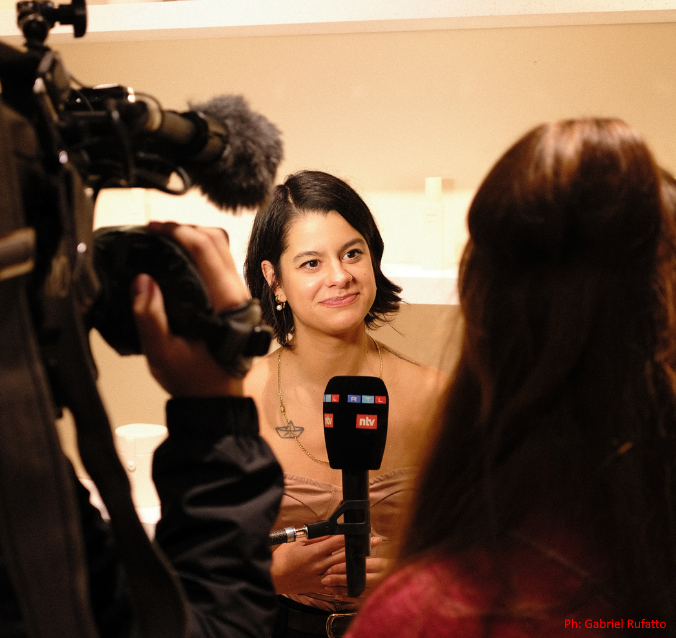

PRESS
INTERVIEWS & FEATURES
- Interview with The Berliner
- Interview with WIRED
- Euractiv - Tech policy's blind spot
- VSquare - The most powerful man in porn
- Sex Tech Guide - UK Age Verification
- Playful TV feature
- Podcast interview Guten Tag
- Interview for Sensuali
- Podcast interview with Anja Mack (Spotify)
- Podcast Interview with Anja Mack (YouTube)
- Intersectional Islands Podcast
- Spotify Podcast Episode
- Spotify Podcast Episode
- Spotify Podcast Episode
- Vice
- Interview for the Kraut Reporter
- Kraut Reporter - Seggs
- Interview with Alex TV
- Blog Shy Ventures
- Vamos Falar de Sexualidade - Entrevista
- Entrevista Eduardo Costa – Rádio Itatiaia
- ARTE France – Fragments interview
